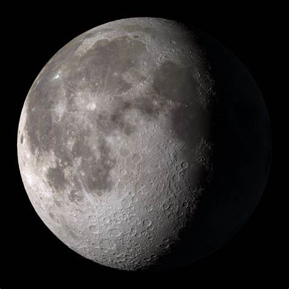

EUROPA
Europa is one of Jupiter's largest moons and is believed to have a subsurface ocean beneath its icy crust.It has the smoothest surface of any known solid object in the solar system, which might indicate a water-ice mixture.

TITAN
Titan is Saturn's largest moon and has a thick atmosphere rich in nitrogen.It has lakes and rivers of liquid methane and ethane on its surface, making it one of the most Earth-like bodies in the solar system.

LUNA
Luna, commonly known as the Moon, is Earth's only natural satellite and the fifth largest moon in the solar system.Its surface is covered with vast plains, mountains, and craters, and it has a significant impact on Earth's tides.